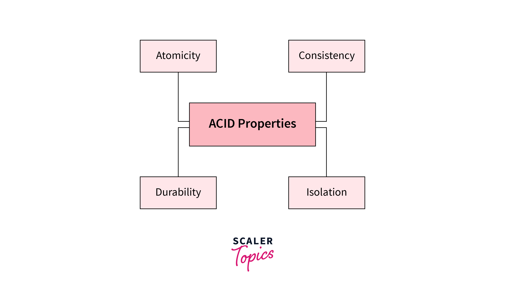

As a System Admin, I want to understand ACID principles in MySQL, mainly for learning purposes.
ACID: It is not only definition, it is mechanism!
A stands for Atomicity
C stands for Consistency
I stands for Isolation
D stands for Durability
Atomicity

Let's talk about Atomicity: from what I understand, it means all transactions will be executed completely or not at all (All or nothing).
Here is an example for ecommerce:
START TRANSACTION; -- We can use BEGIN | BEGIN WORK as well?
-- 1. Check product stock (usually done with FOR UPDATE to lock the row)
SELECT stock FROM products WHERE id = 1 FOR UPDATE;
-- 2. Create order
INSERT INTO orders (product_id, quantity, status) VALUES (1, 1, 'pending');
-- 3. Deduct stock
UPDATE products SET stock = stock - 1 WHERE id = 1;
-- 4. Create payment
INSERT INTO payments (order_id, amount, status) VALUES (1, 100, 'pending');
COMMIT; -- Send transaction
What makes it Atomic?
Because we wrapped these 4 queries inside a START TRANSACTION; ... COMMIT; block, MySQL will treat them as a single Unit of Work.
If step 3 fails (e.g., due to a trigger error, constraint violation, or server crash), the application or MySQL will execute a ROLLBACK; command. At that point, the data inserted in step 2 will be undone (removed). The database will return to the exact same state it was in before running START TRANSACTION. That is atomicity!
So for ROLLBACK, it will used data in Undo Log to restore the data to the previous state.
Consistency
Database never lies! If Atomicity ensures "all or nothing", Consistency ensures that after a transaction is done, the data will be in a valid state. So, how does it work?
Database Constraints are used to ensure data integrity.
I copied from w3schools, SQL Constraint Types:
The following constraints are commonly used in SQL:
NOT NULL - Ensures that a column cannot have a NULL value
UNIQUE - Ensures that all values in a column are unique
PRIMARY KEY - Uniquely identifies each row in a table (a combination of a NOT NULL and UNIQUE)
FOREIGN KEY - Establishes a link between data in two tables, and prevents action that will destroy the link between them
CHECK - Ensures that the values in a column satisfies a specific condition
DEFAULT - Sets a default value for a column if no value is specified
CREATE INDEX - Creates indexes on columns to retrieve data from the database faster
Consistency is not only about DB avoid wrong data, it is also state of data when change from current valid state to another valid state after transaction finished succesfully!
Isolation
This might be a little advanced for me, but I will try my best to explain. The target is Isolation, and MVCC (Multi-Version Concurrency Control) is the mechanism that achieves it without making our database slow as hell!
Okay, why do we need Isolation?
- Dirty Read: Transaction A read data that transaction B is modifying but not commit yet. If transaction B rollback, transaction A will have wrong data.
- Non-repeatable Read: Transaction A read data, then transaction B modify the same data and commit. If transaction A read the same data again, it will get different data.
- Phantom Read: Transaction A read data, then transaction B insert new data that match the condition of transaction A. If transaction A read the same data again, it will get new data.
So how do we deal with those issues above?: Instead of lock database, not allow anyone to read or write when someone is modifying database, InnoDB create multiple version of data (we called it is Snapshot!)
- When user A is updating, User B execute select query and still see old snapshot without being locked!
- Each transaction will have it's owned Read View to known which data is visible to it.
And I want to put keyword Next-Key Lock, it is unique machanism of InnoDB to avoid phantom read! Read more here: https://dev.mysql.com/doc/refman/8.4/en/innodb-next-key-locking.html
For a good example: with MVCC, we can backup database using mysqldump without lock the database! (mysqldump --single-transaction)
So again, it's a tradeoff between performance and safety! Choose carefully!
Durability
This is the easiest part of the ACID principles. After you COMMIT, it will persist on disk!
When we COMMIT, changes will be written into a log file sequentially called the Redo Log (file ib_logfile), often known as Write-Ahead Logging (WAL). Here is the documentation for the Redo log.
Again, there is a tradeoff between performance and safety!
The innodb_doublewrite variable controls whether the doublewrite buffer is enabled. It is enabled by default in most cases. To disable the doublewrite buffer, set innodb_doublewrite to OFF. Consider disabling the doublewrite buffer if you are more concerned with performance than data integrity, as may be the case when performing benchmarks, for example.
InnoDB System Variables - innodb_flush_log_at_trx_commit So for System/DB Admin: - Value = 1 (default), the most safety, but slowest! - Value = 0/2, faster, but less safety!
The SRE Takeaway
- Want complete safety?: set
innodb_flush_log_at_trx_commit = 1 - Want to backup without downtime? Use
--single-transaction